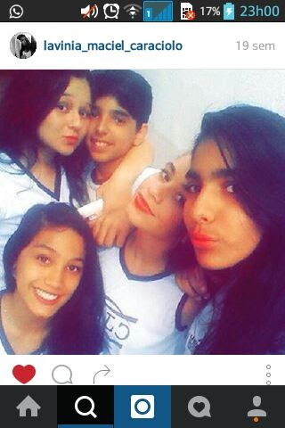

Eu queria deixar aqui um pouco de nós, não sei se vai ficar bom, mas espero que aproveite, leia tudo com calma e faça devagar, aproveite cada lembrança! E por favor, escute as muicaaaas. E o mais importante, feliz aniversário!
De cara não podia deixar de relembrar o primeiro beijo, ali era que nós dariamos o primeiro encontro de nossa história de paixão, digo de AMOR! Eu todo envergonhado nem sabia o que tava fazendo... kkk
Qual cena tu acha que não sai da minha cabeça desse dia na praia?
Agora a gente já pula para o que seria nosso segundo beijo, embora sempre ser contado como o primeiro já que dei fechame no primeiro kkk. Que eu já te queria isso era óbvio, eu só dizia que era muita areia pra dar uma irritadinha, mas porque tu acha que “demorei” a ficar e esperei mais por tu do que ataquei?
Qual a resposta?
Enfim estamos nos vendo quase todos os dias, passamos algum tempo sem se falar após nosso segundo beijo e até nos vimos e não ficamos (eu novamente mole kk), mas começamos a ficar quase todos os dias e antes do nosso namoro qual cena mais marcante?
Qual a cena mais marcante?
Agora já estamos quase namorando e meu maior medo ainda era Miguel, eu não sabia agir com ele, eu tinha medo de tudo que eu fizesse, tinha medo de me achar chato ou forçado, mas eu sempre quis ser amigo dele kkk, a primeira vez que brinquei com ele eu nunca vou esquecer também, então qual foi a primeira brincadeira?
Qual foi a primeira brincadeira?
Agora a gente deu certo, estamos juntos e já teve muita confusão, porém após meu pior erro, a melhor coisa aconteceu: tu foi dormir lá em casa pela primeira vez! Foi algo muito engraçado, mas que dali em diante mudaria minha vida, minha forma de pensar e de viver completamente. Após aquele dia, eu queria aquilo mais e mais...
Quando se fala naquela noite, tu já lá em casa, o que tu acha que eu pensava?
Bem, isso aqui era pra ser mais bonitinho e bem feito, mas eu não sei se vou estar desbloqueado e já tem dias que to tentando fazer isso, e se eu tiver bloqueado e não tiver como te mandar aí fudeu, vou parando por aqui kkk. Mas feliz aniversário, espero que tenha escutado todas as músicas de coração, cada música foi tirada de alguma lembrança, eu espero que sua vida fique em paz, não fiz isso pensando em nos falar, se for melhor assim que seja, talvez não estejamos prontos para viver nosso amor agora, mas como eu disse, eu vou te esperar até depois da morte. Então, quando achar que está pronta para ficar comigo de verdade, pode falar comigo. Sinceramente, não acho que devemos ter contato se não for para estar juntos de verdade, mas que sua vida seja cheia de bênçãos e gratidão! Espero que passe por essa fase turbulenta e saiba que, se você tiver passando por algum karma que seja em relação a mim, eu te perdoo por tudo. Eu te amo pra sempre. Feliz aniversário adiantado e lembre-se que vou estar pronto quando você estiver. Obrigado <3